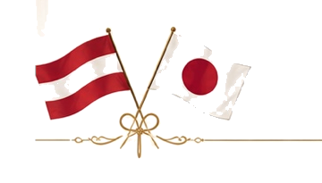
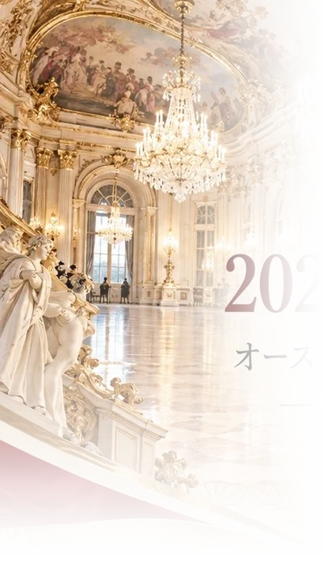
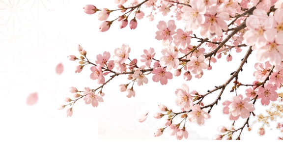
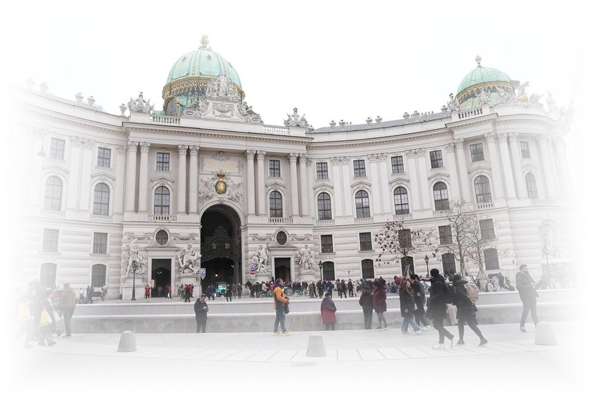
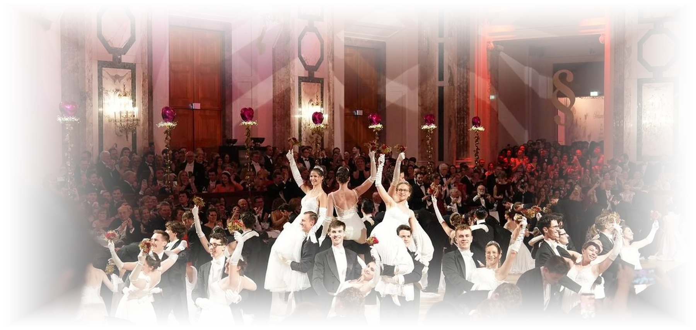
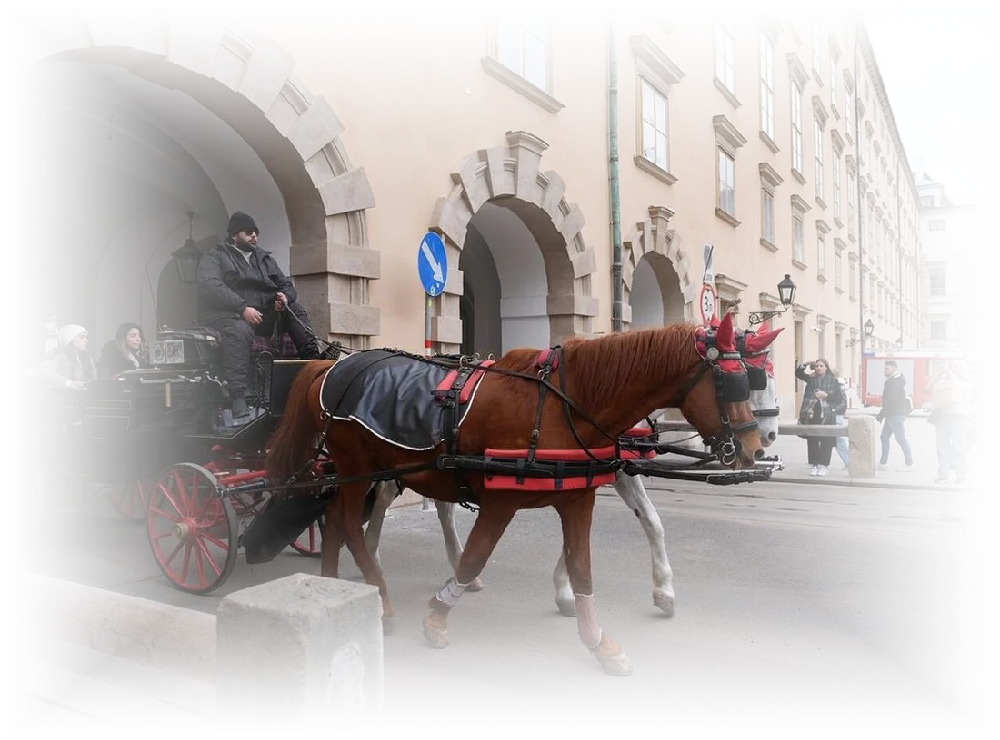
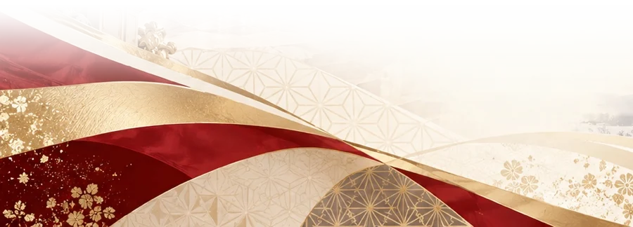

AUSTRIA · JAPAN 2027 – 2029

日本・オーストリア
国交160周年プロジェクト
オーストリアと日本をつなぐ、継続的な文化交流プロジェクト
A continuing cultural exchange between Austria and Japan, toward the 160th anniversary of diplomatic relations in 2029.
1869DIPLOMATIC RELATIONS2029160TH ANNIVERSARY
1869年、両国は修好通商航海条約を結びました。1873年のウィーン万国博覧会は、日本が「日本」という一つの国として初めて参加した国際博覧会です。
それから150年あまり。この節目に向けて、ウィーンと日本をつなぐ一つの大きなプロジェクトが、いま動き始めています。
160YEARS OF FRIENDSHIP


History
オーストリア＝ハンガリー帝国と日本の国交が始まる。
日本が初めて公式に参加した国際博覧会。日本文化がヨーロッパに広く紹介される。
2月6日、ホーフブルク王宮。墺日文化交流会として、日本から参加する最初の年。
オーストリアと日本がともに祝う、象徴的な国際交流プロジェクトの到達点。

Why now · 1873
1873
1873年のウィーン万国博覧会は、日本が「日本」という一つの国として初めて参加した国際博覧会でした。
1873 → 2027 → 2029 From the first stage to the 160th year.
About
墺日文化交流会は、特定の一つのイベントのための団体ではなく、オーストリアと日本を継続的につなぐための文化交流プロジェクトです。
文化・芸術交流、企業・人的交流、文化顕彰を一つひとつ育て、2029年の国交樹立160周年へつなげていきます。
Why we do this
日本の文化を持って、日本からウィーンへ出向く流れを、毎年つくるためです。
1873年のウィーン万国博覧会に、明治の日本は、国として初めて公式に参加しました。佐野常民らが率いた一行は、会場に神社と日本庭園を造り、全国の工芸品を並べました。皇帝フランツ・ヨーゼフ1世と皇后エリーザベトが庭園を訪れ、日本の出品は名誉賞を含む218の賞を受けました。
この時、動いたのは文化だけではありませんでした。ウィーンでは日本の美術への熱が広がり、のちの分離派やクリムトにまで受け継がれました。出品物の多くはヨーロッパの博物館に贈られ、その一つがいまのウィーン応用美術館（MAK）です。日本の側では、工芸品を欧米へ売る商社が生まれ、24人の技術伝習生がヨーロッパで学んで、帰国後に養蚕や製陶の新しい産業を起こしました。ウィーンでの経験は、日本の博覧会や技術の学校づくりにも生かされました。
文化が人の目を引き、売れる物になり、学んだ人が産業を興す。両方の国で、文化と経済と人づくりが一緒に動きました。
その後の150年、太く続いてきたのは、ウィーンが日本へ来てくれる行き来でした。ウィーン少年合唱団は1955年から日本を36回巡り、日本の企業はウィーンの歌劇場やオーケストラの奏者を招く公演を、長年支えてきました。
この行き来は、これからも大切です。そこにもう一つ、日本の文化を持ってウィーンへ出向く向きを加えたい。
今度は、もう一度、
日本から持って行く番です。
舞踏会の季節にあたる1月は、日本からウィーンに泊まる人が一年で最も少ない月です。その季節に、毎年、日本から人を連れて行きます。日本の側では、伝統的工芸品の生産額が、1983年からの30年あまりで5分の1以下になりました。日本の工芸や服には、海外で直接見てもらい、手に取ってもらう場が要ります。
私たちがウィーンで重ねたいのも、1873年と同じ形です。舞踏会の場で日本の文化に目を留めてもらい、工芸や服を手に取ってもらい、日本から行った人が現地の人と知り合って帰ってくる。文化と経済と人の行き来を、一緒に、毎年動かします。
日本の美術への熱が、分離派やクリムトへ
工芸品を欧米へ売る商社が生まれる
24人の技術伝習生が学び、産業を興す
舞踏会の場で、日本の文化に目を留めてもらう
工芸や服を、手に取ってもらう
日本から行った人が、現地の人と知り合って帰る
2026年2月、私たちはウィーンの舞踏会に日本から加わりました。冬の舞踏会の季節には60万人を超える人が集まり、その約3割が海外から訪れます。
この場に、毎年、日本から人と文化を連れて行く。そう決めて、この会をつくりました。
正装で舞踏会に加わる人も、ウィーンで日本の服や工芸を見せたい人も、ご一緒できます。オーストリアの方が来日される時には、日本でお迎えします。
2029160TH ANNIVERSARY
2029年の国交160周年には、それまでにウィーンへ出向いた人と文化を、大きな形でお見せしたいと考えています。
ただ、この会は160周年で終わりません。翌年の2月にも、私たちはウィーンへ向かいます。
ホーフブルク王宮 大広間 2026年2月
VIENNA BALL2027.2.6SAT
1814年の舞踏会から続く、ウィーンの冬の伝統。かつて皇帝が暮らしたホーフブルク王宮に、世界から正装の人々が集まります。墺日文化交流会は、2027年2月6日、日本からの参加者とともにこの舞踏会に参加します。
Record · Vienna, February 2026
過去の実績。2026年2月、ウィーンの舞踏会の現場に立ち、この交流の形を確かめました。


Who we are
墺日文化交流会は、実行委員会を設け、企画、広報、参加者募集、企業連携、イベント運営、現地との調整を一つの体制で行います。
墺日文化交流会は、日本とオーストリア双方の外交・文化・法律分野の関係機関との協力体制のもと、2029年に向けた継続的な交流事業を推進します。両国の関係機関と企業・個人パートナーが、それぞれの専門性やネットワークを生かし、文化交流事業をともに推進します。
交流会について、2027年2月6日の舞踏会について、スポンサー・勲章については、下記のお問い合わせフォームからご連絡ください。
Join us
2027年2月のウィーンから、2029年の160周年へ。
オーストリアと日本の新しい交流の形を、ご一緒につくっていただける方をお待ちしています。
